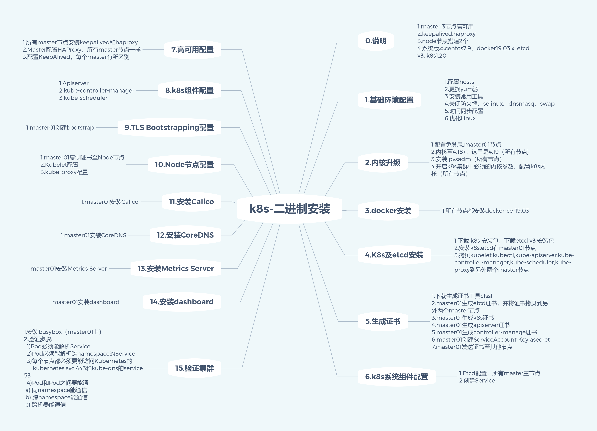
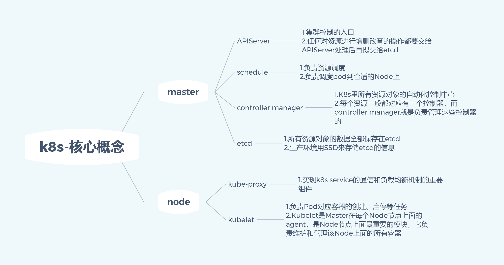
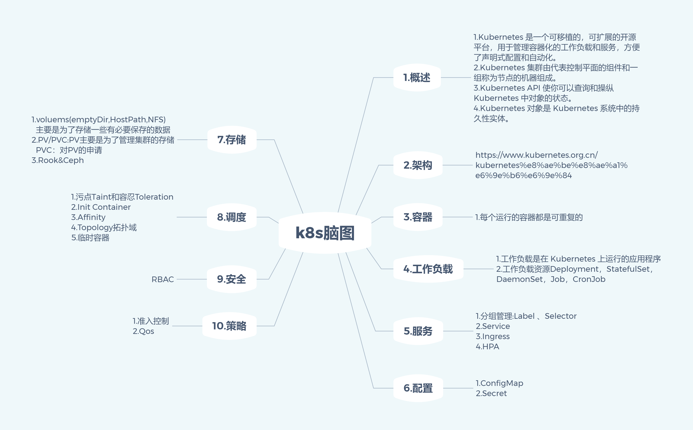

Kubernetes
- TAGS: Linux
总结篇
二进制安装总结

核心概念

概念

EKS参考
从大纲整体过一遍后，可以看看eks workshop文档
- eksworkshop: github youtube
eksworkshop-old: github bilibili
基本原理到手动一步步操作
- 从最底层开始徒手搭建Kubernetes集群 github
- Kubernetes CKA, CKAD, CKS证书备考教程: bilibili killercoda
大纲
安装
kubeadm
- k8s 高可用架构解析
- kubeadm 高可用安装基本说明
- kubeadm 基本环境配置
- kubeadm 基本组件安装
- kubeadm 高可用组件安装
- kubeadm 集群初始化
- 高可用 master 及 token 过期处理
- kubeadm node 节点配置
- dashboard & metrics server 安装
- 集群可用性验证
虚拟机配置： 2C2-3G 20Gdisk
高可用集群规划
- 主机名: k8s-master1~3 k8s-node1~2
配置信息、备注
系统版本 centos7.9
docker 19.03.x
Pod网段 172.168.0.0/12
Servic网段 10.96.0.0/12
二进制
- k8s 高可用架构解析
- 二进制高可用安装 k8s 集群说明
- 二进制高可用基本配置
- 二进制系统和内核升级
- 二进制基本组件安装
- 二进制生成证书
- 二进制高可用及 k8s 组件配置
- 二进制安装 TLS Rootstrapping 自动颁发证书
- 二进制 node 节点配置（calico, coreDNS）
- 二进制 metric & dashboard 安装
- 二进制高可用集群可用性验证
- 生产环境 k8s 集群关键性配置
- Bootstrapping: kubelet 启动过程
- Bootstrapping: CSR 申请和证书颁发原理
- Bootstrapping: 证书自动结项原理
基础
必备docker基础
- docker 基础
- docker 基本命令
- dockerfile 用法
- 镜像优化：制作小镜像
- 镜像优化：多阶段制作小镜像
- scratch 镜像
k8s基本概念
- 为什么要用 kubernetes
- k8s 架构解析：master 节点介绍；Node 节点介绍
- 什么是 pod
- 为什么引入 pod
- 定义一个 pod
- 零宕机发布应用必备知识： pod 三种探针
- 零宕机必备知识： StartupProbe
- 零宕机必备知识： Liveness 和 Readiness
- 零宕机必备知识： Pod 退出流程
- 零宕机必备知识： PreStop 的使用
资源调度
- RC & ReplicaSet
- 无状态服务 Deployment 概念
- Deployment 的更新
- Deployment 的回滚
- Deployment 的扩容和缩容
- Deployment 更新暂停和恢复
- Deployment 更新注意事项
- 有状态应用管理 StatefulSet 概念
- StatefulSet 扩容缩容
- StatefulSet 更新策略
- StatefulSet 灰度发布
- StatefulSet 级联删除和非级联删除
- 守护进程服务 DaemonSet
- DaemonSet 的使用
- DaemonSet 的更新和回滚
- HPA 自动扩缩容
服务发布
- Label & Selector
- 在 k8s 上是如何发布服务的
- 什么是 Service
- 定义一个 Service
- 使用 Service 代理 k8s 外部服务
- 使用 Service 反代外部域名
- Service 常用类型
- 什么是 Ingress
- 使用 helm 安装 ingress
- ingress 简单使用
- ingress 多域名使用
配置管理
- k8s 配置管理 ConfigMap
- k8s 加密数据管理 Secret
- ConfigMap & Secret 使用 SubPath
- ConfigMap & Secret 热更新
- k8s 1.19 的不可变 Secret 和 ConfigMap
进阶
持久化存储
- k8s 存储 Volumes 介绍
- Volumes HostPath 挂载缩主机路径
- Volumes EmptyDir 实现数据共享
- 挂载 NFS 至容器
- 持久存储 PV&PVC 概念
- PV&PVC 入门使用
高级调度
- CronJob 计划任务
- 污点和容忍 Taint & Toleration 入门
- Taint & Toleration 补充
- 初始化容器 InitContainer
- Pod 亲和性和返亲和性
- Topology 拓扑域概念
- 使用 Topology 实例多地多机房部署
- 临时容器概念和配置
- 使用临时容器在线 debug
高级
云原生存储及存储进阶
- 云原生存储 Rook 介绍
- Rook 部署
- 使用 Rook 部署 Ceph 集群
- 创建块存储类型的动态存储
- StatefulSet 动态申请存储
- 使用 PVC 动态申请存储
- 共享文件系统类型的 StorageClass
- PVC 在线扩容使用
- PVC 快照和回滚
- Rook Ceph xfs_repair 问题
- 存储回顾
中间件容器化及helm
- 容器化中间件基本说明
- 如何部署一个容器到 k8s
- 部署 redis operator
- 在 k8s 上部署 redis 集群
- redis 集群扩容和缩容
- 部署 RabbitMQ 集群到 k8s
- 解决 RabbitMQ 密码不生效问题
- RabbitMQ 扩缩容
- Helm v3 安装使用
- Helm 目录层级
- Helm 语法
- 编写 Helm 部署 RabbitMQ 集群
- 运行自己编写的 Helm
- 部署 zookeeper 和 kafka 集群
- kafka 和 zookeeper 集群扩缩容
Helm3
添加仓库
#zookeeper kafka $ helm repo add bitnami https://charts.bitnami.com/bitnami $ helm search repo bitnami $ helm install my-release bitnami/<chart> #阿里源 helm repo add ali-stable https://kubernetes.oss-cn-hangzhou.aliyuncs.com/charts #gitlab helm repo add gitlab https://charts.gitlab.io/
运维
k8s容器日志收集
- EFK 日志收集
- 使用 Filebeat 收集容器内日志
- 使用不同资源名称查询日志
prometheus
- 监控入门
- prometheus 安装
- prometheus Metrics 类型
- promQL 基本操作
- prom QL 常用函数
- 解决 Scheduler 监控问题
- prometheus 监控 etcd 集群
- prometheus Exporter
- prometheus 黑盒监控
- prometheus additional
- 告警处理
- Alertmanager 入门
- Prometheus 使用邮件告警
- Prometheus 使用微信告警
- Prometheus 自定义告警模板
- 监控实战
- Prometheus 自动发现
- Prometheus 监控 java jvm
- 基于 Eureka 自动发现监控 java jvm
服务发布ingress进阶
- Ingress Nginx 入门
- Ingress Nginx 域名重定向
- Ingress Nginx 前后端分离
- Ingress Nginx ssl 配置
- Ingress Nginx 黑白名单
- Ingress Nginx 匹配请求头
- Ingress Nginx 速率限制
- Ingress Nginx 实现灰度/金丝雀
- Ingress Nginx 自定义错误页面
- Ingress Nginx 基本认证
- Ingress Nginx 监控
DevOps
持续集成-持续部署入门
- Jenkins CICD 介绍
- Jenkins 安装
- Jenkins 声明式流水线入门
- Jenkins 变量使用
- Jenkins 级联变量
- 镜像仓库配置
- Gitlab 配置
- Jenkins Credentials 配置
- Jenkins BlueOcean 入门
- 不同环境流水线设计
- 图形化创建 Jenkinsfile
- 持续集成-持续部署实战
- 基于 k8s 的动态 jenkins slave
- jenkins 配置 k8s 多集群
- KUBECONFIG 多集群配置
- Jenkins 自动化构建 java 应用
- Jenkins 自动化构建 nodejs 应用
- Docker 镜像高级优化及自动化构建建议
- Jenkins 生产环境和 UAT 环境流水线设计
- Jenkins 基于多角色的账户管理